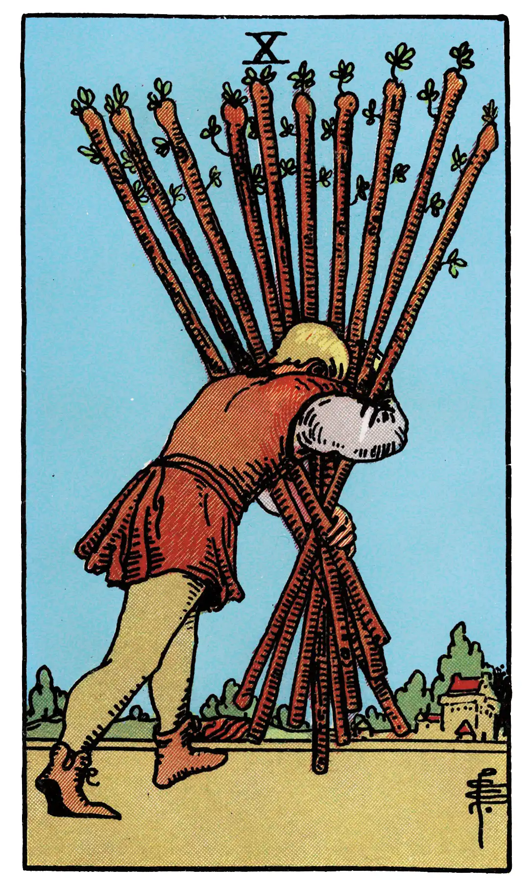

Ten of Wands

A.E.W.
Upright
A card of many significances, and some of the readings cannot be harmonized. I set aside that which connects it with honour and good faith. The chief meaning is oppression simply, but it is also fortune, gain, any kind of success, and then it is the oppression of these things. It is also a card of false-seeming, disguise, perfidy. The place which the figure is approaching may suffer from the rods that he carries. Success is stultified if the Nine of Swords follows, and if it is a question of a lawsuit, there will be certain loss.
Additionally
Difficulties and contradictions, if near a good card.
Recurrence
2 - Change.
3 - New condition.
4 - Condemnation.
Reversed
Contrarieties, difficulties, intrigues, and their analogies.
Additionally
[None given.]
Recurrence
2 - Expectation justified.
3 - Disappointment.
4 - Event, happening.
S.L.M.M.
Upright
Confidence, Security, Honour, Good Faith
Reversed
Treachery, Subterfuge, Duplicity, Bar.
Description
A man oppressed by the weight of the ten staves which he is carrying.